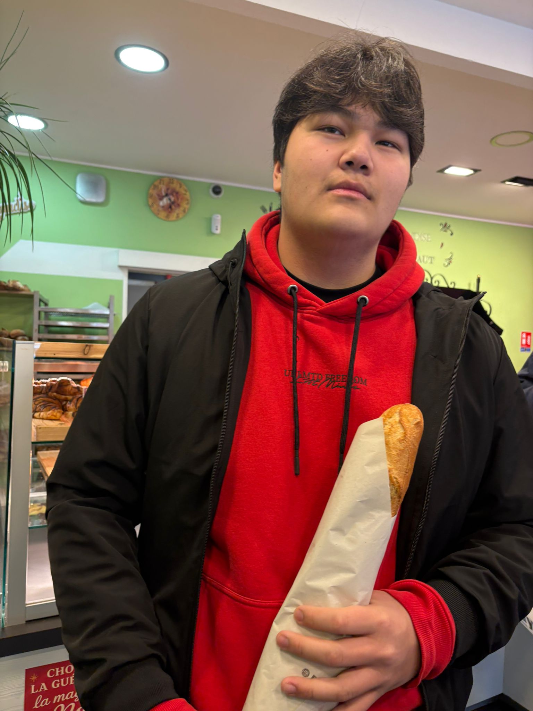
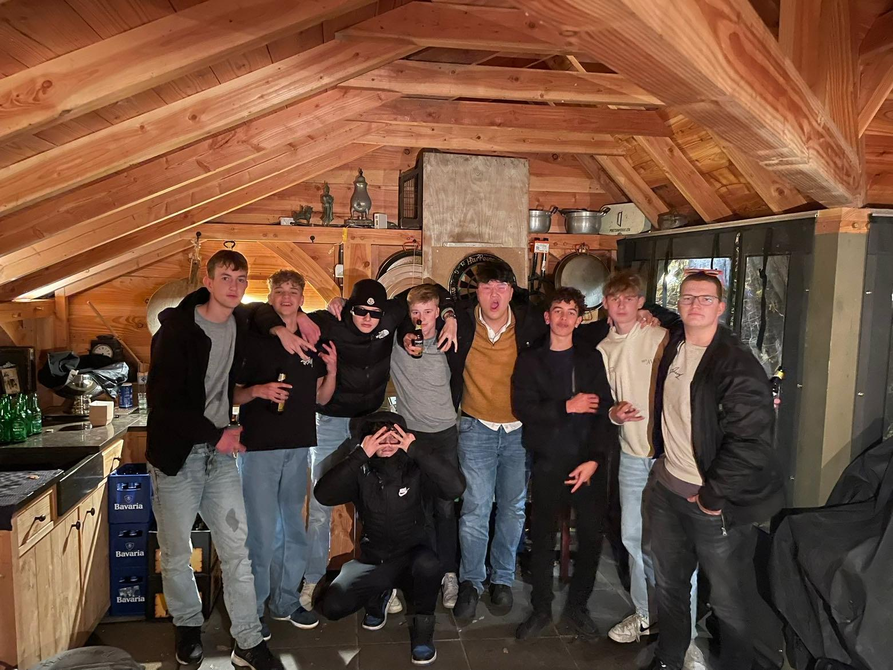

Out exploring
Out exploringSomewhere new
New places, different cultures, and a reason to take the long way home. A little glimpse of Cologne.
Hello, I'm Roman
An Information Technology student at NHL Stenden in Emmen. This is my corner of the internet: what I'm learning, what I'm making, and a little of who I am.

I'm studying Information Technology at NHL Stenden in Emmen. This portfolio is a place to share a little about myself and my interests.
Outside of studying, I love traveling, experiencing different cultures, and spending time with friends. And, of course, there's my cat Nino. He has a whole page to himself.
A few things that make me, me.
Out exploringNew places, different cultures, and a reason to take the long way home. A little glimpse of Cologne.

Good companySpending time with friends, doing fun things, and making memories in between everything else.
/1.jpeg) The real star
The real star
My cat, a very good reason to take a break, and the proud owner of his own photo gallery.